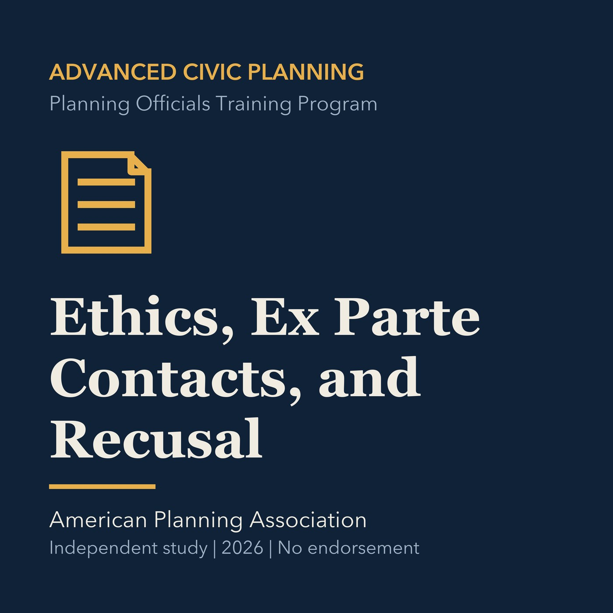

EPISODE 03
Ethics, Ex Parte Contacts, and Recusal
Examines ethical duties, outside contacts, disclosure, bias, and recusal in local hearings.

- Stable GUID
f9f8a74d-e1c3-5d72-99a7-9bad027c231e- Release
- advanced-civic-planning-v2026.3
- SHA-256
03e74ff73dd63f56dcfd1026257b94df278642bcd13129009160abd1511e3860